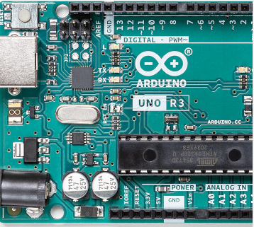
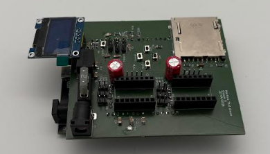
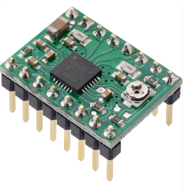
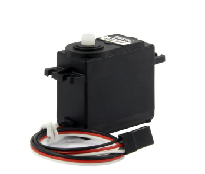
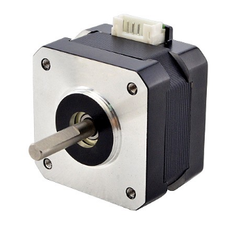
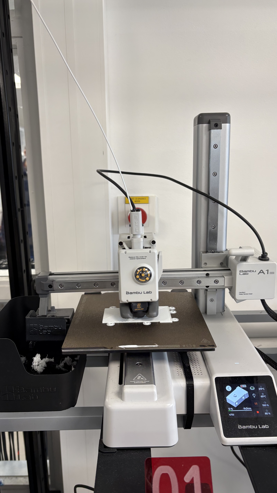
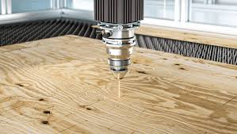

Choix technique

Arduino Nano
Dans notre architecture, l'Arduino Nano présente des avantages indéniables pour le prototypage rapide. Sa grande compacité est un atout majeur : elle vient directement se clipser en dessous du CNC Shield, formant un bloc électronique unique et très peu encombrant qui s'intègre facilement dans notre boîtier imprimé en 3D. Sur le plan économique, c'est une solution extrêmement abordable et idéale pour un projet étudiant. De plus, elle bénéficie de l'immense communauté open-source Arduino et supporte le micrologiciel GRBL, indispensable pour traduire efficacement le G-Code en mouvements mécaniques.
Cependant, à l'usage, cette carte affiche de lourdes limites techniques pour une machine de ce type. Son processeur 8-bit cadencé à 16 MHz offre une puissance de calcul très faible. Lors de trajectoires complexes, l'Arduino Nano peut saturer, ce qui bride la vitesse maximale des moteurs. Sa mémoire est également minuscule (32 Ko de mémoire flash et 2 Ko de RAM), empêchant le stockage local de dessins volumineux ou l'ajout d'interfaces avancées comme un écran tactile. Enfin, elle impose une connectivité filaire constante en 5V, obligeant à laisser un ordinateur branché en USB pendant toute la durée du tracé.
En s'affranchissant des contraintes du matériel imposé, l'utilisation d'une carte Duet 3 Mainboard 6HC constituerait une alternative idéale pour dépasser les limites de notre carte de commande actuelle. Par rapport à notre solution à base d'ESP32, ce composant haut de gamme apporterait une puissance de calcul bien supérieure, capable de lisser les trajectoires et de supprimer les vibrations sur les axes rectifiés grâce à une gestion parfaite des accélérations. De plus, ses drivers intégrés offriraient un fonctionnement totalement silencieux des moteurs tout en augmentant la précision chirurgicale du tracé. Enfin, là où notre montage dépend d'une connexion logicielle directe, la Duet 3 intègre du Wi-Fi, de l'Ethernet et un lecteur de carte SD, ce qui permettrait de stocker les fichiers localement et de piloter la structure XY à distance de manière 100 % autonome.

ESP32
Pour dépasser les limites techniques de l'Arduino Nano, nous avons fait le choix de concevoir et de fabriquer notre propre carte électronique personnalisée autour d'un microcontrôleur ESP32.
Cette transition technologique apporte d'abord une autonomie majeure à notre machine XY grâce à l'intégration native du Wi-Fi. Cette connectivité sans fil nous permet de piloter les tracés à distance, éliminant ainsi l'obligation de laisser un ordinateur constamment branché en USB.
Nous avons également intégré des interrupteurs de position (switchs) pour définir automatiquement le point d'origine lors du démarrage, et un bouton d'arrêt d'urgence de type "coup de poing" pour interrompre immédiatement la machine en cas d'urgence.

CNC Shield
Le principal avantage du CNC Shield réside dans sa capacité à centraliser et à rendre le câblage propre. En s'emboîtant directement sur l'Arduino, il évite des dizaines de soudures ou de connexions complexes grâce à ses connecteurs dédiés pour les moteurs, l'alimentation et les capteurs.
Il offre une excellente modularité : les drivers de moteurs (A4988 ou DRV8825) ne sont pas soudés mais simplement clipsés sur des connecteurs interchangeables.
Cependant, l'inconvénient majeur est que si un driver est branché à l'envers dans son logement, le module et l'Arduino grillent instantanément à la mise sous tension. La gestion thermique est également rudimentaire.
L'adoption d'une carte CNC 32-bits moderne optimiserait notre machine en combinant une puissance de calcul supérieure pour des tracés plus rapides, fluides et ultra-précis sans vibrations, et des drivers haut de gamme garantissant le silence des moteurs ainsi qu'une sécurité électronique accrue. De plus, l'intégration du Wi-Fi et d'un lecteur SD affranchirait la structure XY de tout ordinateur connecté en USB, la rendant pleinement autonome dans son fonctionnement.

Drivers moteurs pas à pas
Les drivers classiques comme le A4988 ou le DRV8825 présentent un avantage économique majeur grâce à leur coût dérisoire. En cas d’erreur de câblage ou de surintensité liée au blocage d’un moteur, seule cette petite puce bon marché grille, ce qui sécurise le budget du projet. Sur le plan technique, ces puces intègrent la technologie du micro-stepping, qui permet de diviser les pas physiques des moteurs en micro-pas . Pour notre architecture de machine, cette fonctionnalité est indispensable pour obtenir des tracés lisses et précis, évitant ainsi l'effet d'escalier sur les courbes
Malgré cela, ces drivers imposent des contraintes de réglage et de maintenance complexes. Le principal inconvénient réside dans le calibrage manuel de la tension de référence. Ce réglage nécessite de tourner un potentiomètre à l'aide d'un tournevis tout en mesurant la valeur au multimètre, une manipulation minutieuse où la moindre erreur peut détruire le composant. De plus, ces drivers chauffent énormément. Ils imposent de coller un radiateur en aluminium sur la puce et de garantir une ventilation active, sous peine de voir le driver surchauffer et couper le mouvement en plein tracé.
Pour s'affranchir des contraintes matérielles, l'adoption du driver intelligent Trinamic TMC5160 optimiserait la machine sur trois aspects essentiels. Grâce à la technologie StallGuard, il détecte électroniquement la hausse d'effort lorsque l'axe arrive en bout de course, ce qui supprime totalement le besoin de capteurs physiques. De plus, il élimine le réglage manuel du courant au tournevis au profit d'une configuration logicielle entièrement sécurisée par le code. Enfin, sa gestion interne poussée à 256 micro-pas rend les moteurs totalement silencieux et fluides, ce qui supprime les vibrations mécaniques et garantit un tracé parfait.

Servomoteur
Le servomoteur standard présente des arguments pratiques majeurs pour notre application. Il intègre sa propre boucle de rétroaction : il suffit de lui envoyer une commande d'angle précise via le code (par exemple 100° pour lever le stylo et 85° pour le poser) pour qu'il s'exécute et maintienne sa position de manière autonome. Son format compact et son poids plume sont idéaux pour ne pas alourdir le chariot mobile.
De plus, son câblage est minimal puisqu'il ne nécessite que trois fils (masse, alimentation 5V et signal PWM), lui permettant de se brancher directement sur les broches dédiées du CNC Shield sans aucun driver de puissance externe. Cependant, les modèles d'entrée de gamme (comme le SG90) imposent des limites importantes. Par conception, leur course est limitée à un angle maximal de 180°. De plus, leurs engrenages en plastique s'avèrent extrêmement fragiles. Si le mécanisme mécanique force ou si un utilisateur manipule manuellement le bras du servomoteur hors tension, les dents des pignons crantés risquent de casser instantanément, rendant l'actionneur inutilisable.
Pour s'affranchir des faiblesses des modèles classiques, le servomoteur Dynamixel XC330 s'impose comme le choix technologique idéal pour la gestion du stylo. Grâce à sa communication numérique bidirectionnelle (TTL), il transmet en temps réel sa position exacte, sa vitesse et sa température à la carte de contrôle. L'intégration d'un encodeur magnétique sans contact à haute résolution (4096 positions sur 360°) garantit une précision de placement extrême. Enfin, sa pignonnerie en métal renforcé le rend virtuellement indestructible, assurant une fiabilité maximale lors des phases répétées de levée et de pose du stylo.

Moteurs pas à pas (NEMA 17)
Pour assurer les déplacements précis sur notre structure XY, nos choix techniques se sont d'abord basés sur le matériel fourni directement par le MakerSpace. Nous avons ainsi intégré des moteurs pas-à-pas standards (de type NEMA 17), positionnés de manière fixe dans les angles de notre châssis, pour animer notre réseau de courroies et déplacer le bloc central.
Le moteur pas-à-pas classique offre des caractéristiques très avantageuses pour notre machine à dessiner. Son principal point fort réside dans son positionnement précis en boucle ouverte. Le moteur tournant par angles fixes , notre carte Arduino Nano connaît la position exacte du chariot simplement en comptant les impulsions envoyées.
Pour faire évoluer notre prototype, le moteur Brushless Servo intégré représenterait la solution idéale en boucle fermée. Grâce à son encodeur magnétique ultra-précis, il corrige sa position en temps réel en cas d'obstacle, éliminant ainsi tout risque de perte de pas. Contrairement au NEMA 17, son couple reste constant même à haute vitesse, ce qui permet des déplacements inter-tracés extrêmement rapides. De plus, sa consommation intelligente adapte l'énergie à l'effort pour éviter toute surchauffe à l'arrêt. Enfin, son processeur interne supprime les vibrations et lisse dynamiquement les mouvements, garantissant un tracé d'une netteté parfaite à haute vitesse.
Choix des matériaux
La fabrication de notre machine repose sur la complémentarité de deux technologies disponibles au MakerSpace : la découpe laser et l'impression 3D.
Nous utilisons la découpe laser pour découper des planches de bois avec une précision millimétrique, ce qui nous permet de réaliser un plateau de travail stable pour le format A4 de la feuille.
En parallèle, l'impression 3D est réservée à la production des pièces aux géométries plus complexes.

